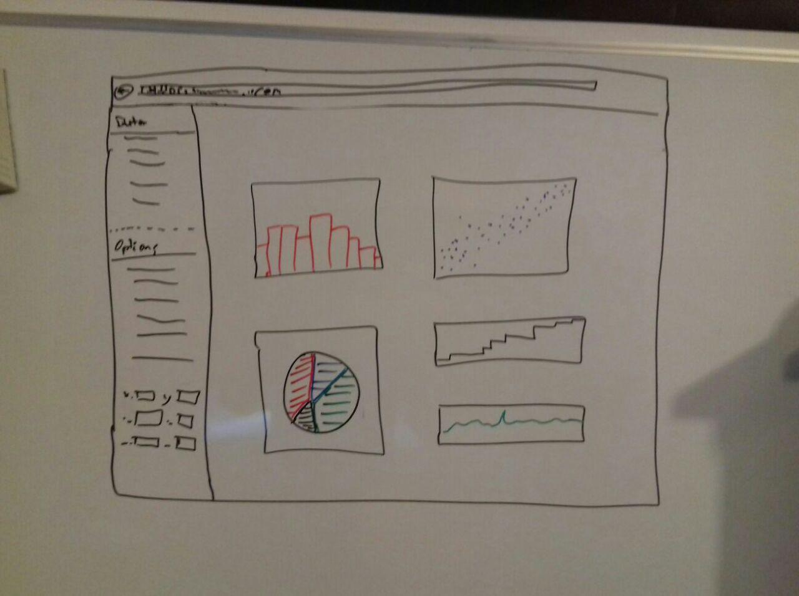
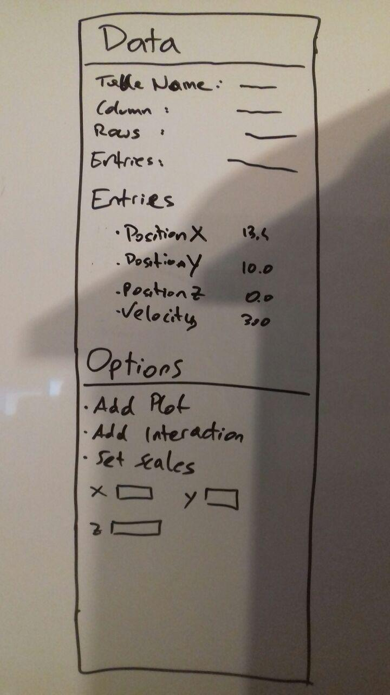
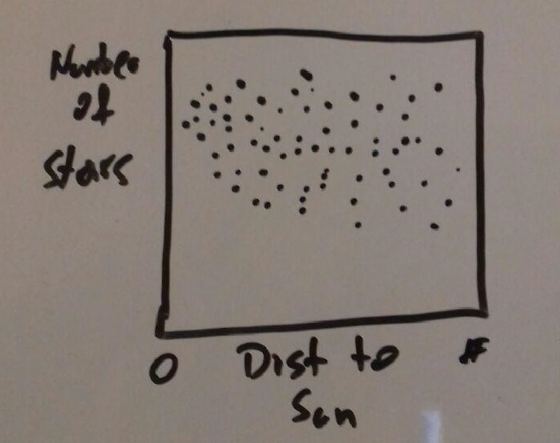
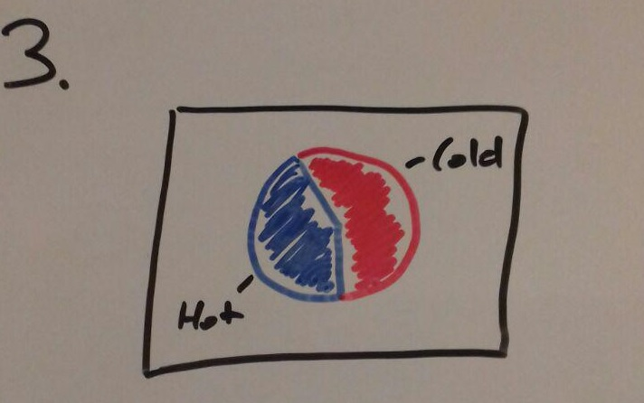
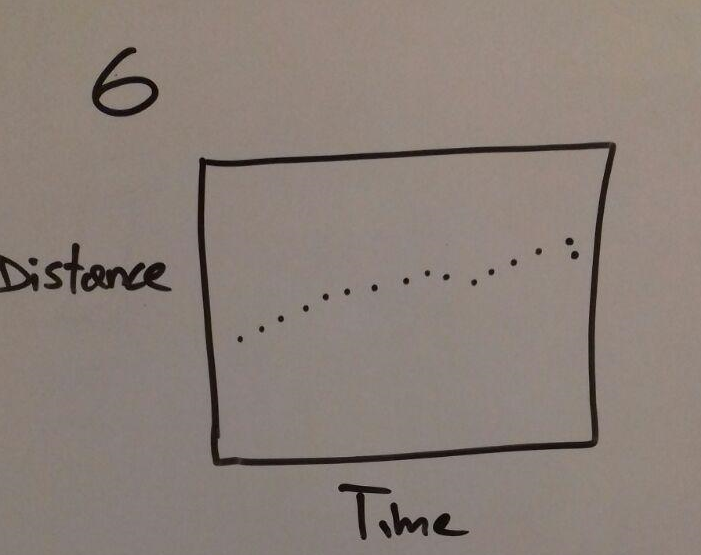

1 Provide a brief reminder of your problem
The user interface is oriented on programs like "Tableau" or "Glue" because we
think it is the most easiest and most intuitive way to work with data. Figure 1
shows a very rough prototype of it with just two main parts:
Information view
Plot view

Figure 1: User interface
2 Present images showing your current visualization design
At the moment the information view, figure 2, is divided in two parts, "Data"
and "Options". Data provides some information about the dataset itself like
name of the table, number of columns, rows and entries or column names.
Options should give the possibility to add plots, interactions and other things
to the plot view.

Figure 2: Information view
3 Demonstrate (i.e. run) your hi-fidelity prototype
The plot view is the area where, like the name tells us, all the plots appear and
the interaction happens.
4 Iterate on the use cases from milestone M2
Since we did not get a real specification of the customer what he would like to
get visualize and just told us to try out whatever we want, we came up with a
few ideas which might be interesting for astronomers. Unfortunately there are
just 4 things, distance to sun, color, position and amount of stars which can be
plotted in a meaningful manner, which made it really hard to find good plotting
examples. At least we got six ideas so far and hope that the process of working
with the data more intense we get new ideas for new plots.
Scatterplot which shows the number of stars compared to the distance of
the sun.
Advantage is to get a good overview of how the stars are distributed
in the area around the sun. An disadvantage will be the confusion if there are to many stars and therefore no chance to find any patterns or other
interesting things.

Figure 3: Scatterplot
5 Explain any changes to the original visualization design or work plan
It is very easy to understand but it can give a wrong picture of the data
since not all stars has the state of their temperature.

Figure 5: Pie chart
6 Detail current major challenges or problems
It is very easy to understand but it can give a wrong picture of the data
since not all stars has the state of their temperature.
Figure 5: Pie chart
7 A clear separation of tasks between the group members: you have to detail who did what for this milestone.
It is very easy to understand but it can give a wrong picture of the data
since not all stars has the state of their temperature.
Figure 5: Pie chart
8 VIS Techniques
Good could be to see if a star is moving and how much it is moving
in terms of time. Disadvantage is that it is hard to compare many stars
and how they are moving, because it just will show the motion of one star.

Figure 8: Dot plot
9 The work distribution
Expand on your proposed visualization solution. Benjamin + Alexander + Axinya (only figure 13 and dashboard 4)
Provide detailed illustrations of what the interface will look like and how
the user will interact with it (e.g. a storyboard). You may either draw
these by hand or use a mockup tool of your choice.
To help with coming up with novel designs, in order to get full marks,
you need to provide at least 10 different possible single graphs that show
different aspects of the data. In addition, you need to provide at least three
different ways of combining different views into an interactive application
(dashboard) and demonstrate what type of interactions are possible.
In order to ensure you are exploring the visualization design space, we
require you to, reason and design for at least 5 different vis techniques.
These methods can be in terms of vis encodings: aggregation over all variables except for one, aggregation in general, tree-maps, heat-maps, hierarchical exploration, correlation of two variables, correlation over multiple
var, filter, scented widgets, etc.; for interactions: tooltip, zoom, table lens,
focus-and-context (fisheye or similar), small multiples, brushing linking,
etc. You should reason about the advantages and disadvantages of each
of the different views, dashboards, and interactions.
Present a scenario of use, using sketches and text to demonstrate how the user
accomplishes a specific task with your tool.
The first step here is to make your tasks much more detailed and specific.
Create a fictitious user and describe a specific problem they have. Axinya + Nicole
A scenario then spells out what a user would have to do and what he or
she would see step-by-step in performing a task using a given system. The
key distinction between a scenario and a task is that a scenario is design-specific, in that it shows how a task would be performed if you adopt a
particular design, while the task itself is design-independent: it's something the user wants to do regardless of what design is chosen. Axinya
Implementation details.
Nicole
Milestones that break down the work into smaller parts.
Nicole
Website.
Axinya + Nicole
10 References
1. Our website: http://wwwlab.cs.univie.ac.at/~a1368965/vis17/
2. https://medienportal.univie.ac.at/uniview/professuren/cv/artikel/univ-prof-
dr-joao-alves/
3. vis lectures
4. http://gaia.ari.uni-heidelberg.de/tap/tables
5. http://sci.esa.int/gaia/
6. http://sci.esa.int/gaia/58275-data-release-1/
7. https://en.wikipedia.org/wiki/
8. http://www.mattboldt.com/demos/typed-js/